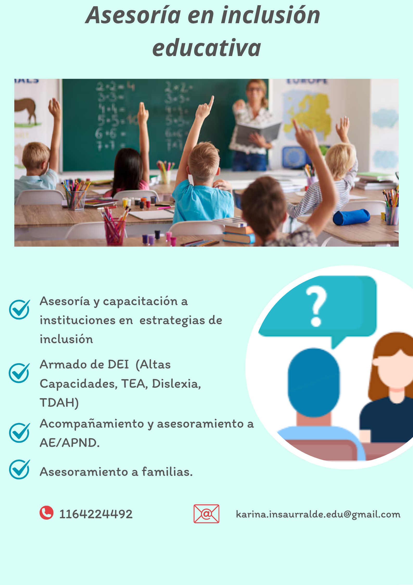

Crónicas Migrantes (destacado)
Proyecto organizado por OIM y Revista Anfibia sobre experiencias migratorias.
Leer artículoEducación, inclusión y narrativas contemporáneas
Soy Karina Insaurralde, licenciada en educación, periodista y escritora. En proceso de finalización de mi tesis de maestría y de la carrera de psicopedagogía.
Mi trabajo se sitúa en la intersección entre narrativas contemporáneas e inclusión educativa, con especial interés en infancia, neurodiversidad y altas capacidades.
Desarrollo proyectos que articulan escritura, investigación social y formación docente.
Proyecto organizado por OIM y Revista Anfibia sobre experiencias migratorias.
Leer artículoInvestigaciones sobre inclusión, discapacidad y comunicación.
Ver ResearchGateÁreas de trabajo: inclusión educativa, formación docente, periodismo narrativo.
Investigación y educación: Coordino el Equipo de Educación de la Asociación Altas Capacidades Argentina, donde brindamos asesoramiento y capacitaciones a distintos actores del ámbito educativo.
Trabajo con instituciones educativas, equipos docentes y familias en estrategias de inclusión, altas capacidades y acompañamiento pedagógico.
